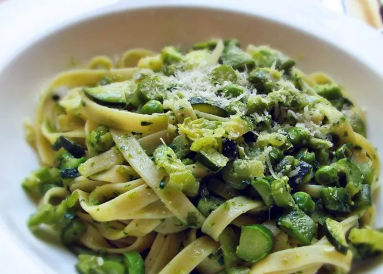

Back to Homepage
Pasta Primavera

Description
Pasta Primavera is a light and vibrant pasta dish that celebrates the flavors of spring. It features a colorful medley of fresh vegetables, tossed with pasta and a light sauce. This versatile recipe can be customized with your favorite seasonal vegetables, making it a healthy and delicious meal.
Enjoy this colorful and flavorful pasta, a perfect way to enjoy a variety of fresh vegetables!
Ingredients
- 1 lb Pasta (such as penne, farfalle, or linguine)
- 1 cup Broccoli florets
- 1 cup Asparagus, cut into 1-inch pieces
- 1 cup Cherry tomatoes, halved
- 1/2 cup Peas
- 1/2 cup Carrots, sliced
- 1/4 cup Olive oil
- 2 cloves Garlic, minced
- 1/2 cup Vegetable broth
- 1/4 cup Fresh basil, chopped
- 1/4 cup Fresh parsley, chopped
- Salt and pepper to taste
- Grated Parmesan cheese (for serving, optional)
Steps
- Cook the pasta according to package directions. Drain and set aside.
- While the pasta is cooking, heat the olive oil in a large skillet over medium heat. Add the garlic and sauté for 1 minute, until fragrant.
- Add the broccoli, asparagus, carrots, and peas to the skillet. Cook for 5-7 minutes, until tender-crisp.
- Add the cherry tomatoes and vegetable broth to the skillet. Cook for 2-3 minutes, until the tomatoes soften slightly.
- Add the cooked pasta to the skillet and toss to combine with the vegetables and sauce.
- Stir in the fresh basil and parsley. Season with salt and pepper to taste.
- Toss everything together until well combined and heated through.
- Serve immediately, garnished with grated Parmesan cheese, if desired.